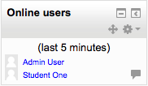

The Online users block shows a list of users who have been logged into the current course. The list is updated on a regular basis (the default is every 5 minutes but this may be changed - see below).
Note that even though a user may have been logged into a course within the last 5 minutes, it does not necessarily mean that this user is still online.
- If you hold the cursor over somebody’s name, you will see how long ago that person was last “seen” in the course
- If you click on the envelope icon next to somebody’s name, you will be able to send a private message to that person (using Moodle’s messaging system)
Note: If separate groups are enabled in a course and this block is added onto the course page, only members of the group will be displayed in the list.
The online users block has one setting which may be changed by an administrator in Administration > Site administration > Plugins > Blocks > Online users.
- Remove after inactivity - The number of minutes after which users will not be displayed in the list. The default is 5 minutes. You may want to adjust this if the list of users displayed is too long or too short.